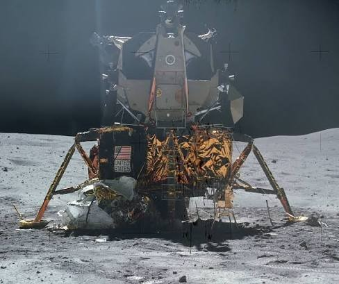
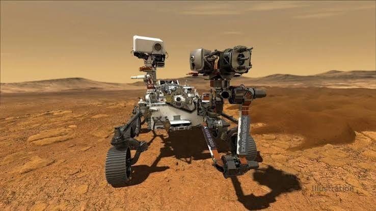

133 misiones · 1959–2026
Revisamos 96 objetos que llegaron a la Luna y 37 misiones enviadas a Marte, con los catálogos públicos del NSSDC de la NASA. Mostramos cuántos se perdieron, cuánto tiempo trabajaron, cuánto costaron y qué rovers recorrieron más.
96
naves, etapas y objetos registrados desde 1959
37
misiones enviadas desde 1962
18
objetos en la Luna cuya posición exacta no se conoce
45.2 km
recorridos por Perseverance en Marte
Inventario
El orbitador LRO de la NASA ha fotografiado la superficie lunar para ubicar dónde cayeron o aterrizaron estas naves:
Todos los objetos sin ubicar terminaron en impacto, por ejemplo la etapa de ascenso del Apolo 11.
Marte está mucho más lejos y llegar es más difícil, pero la mayoría de las misiones registradas logró operar:
Supervivencia de las naves


Mediana
34 días
La mitad de las naves funcionó hasta 34 días después de llegar.
Media
264 días
Tiempo promedio de operación tras la llegada.
Al cumplir 1 año en la Luna, solo 22 de cada 100 misiones siguen funcionando.
Mediana
85 días
La mitad de las misiones funcionó hasta 85 días después de llegar.
Media
1,929 días
Algo más de 5 años en promedio.
Al cumplir 1 año en Marte, 38 de cada 100 siguen activas, y 28 de cada 100 superan los 8 años.
Curva de Kaplan-Meier: porcentaje de misiones activas desde la llegada hasta más de 8 años.
Se ve la carrera espacial de los 60–70, la pausa lunar de los 80 y el regreso reciente.
Resultados de los modelos
+19%
Comparando naves del mismo destino y la misma época, las más pesadas tuvieron 19% más riesgo de terminar antes. Muchas eran naves grandes pensadas para misiones cortas.
−10%
En la misma comparación, las naves que aterrizaron tuvieron 10% menos riesgo de terminar pronto que las que solo orbitaron.
1.89x
Por cada 10 años, el tiempo de operación tras la llegada se multiplica por 1.89, casi el doble.
2.20x
Con el mismo peso y tipo de nave, una misión a Marte cuesta 2.2 veces lo que una a la Luna. Duplicar el peso sube el costo en 24%.
Pasa el cursor sobre una burbuja para ver la nave. El tamaño del círculo indica el presupuesto.
Robots con ruedas
Azul: Luna (Lunokhod 2 recorrió 39 km en 1973). Rojo: Marte (Perseverance lidera con 45.22 km, seguido de cerca por Opportunity con 45.16 km).
Rover de 1,025 kg que explora el cráter Jezero desde 2021. Superó el récord de Opportunity (45.16 km).
126 misiones con datos completos
Naves medianas que tardan meses en llegar y luego trabajan durante años.
Sondas de peso y viaje parecidos al grupo 1, pero que perdieron contacto o se estrellaron antes de empezar a trabajar.
Todas fueron a la Luna: naves o etapas muy pesadas que llegan en pocos días para misiones cortas.
Simulador
Elige destino, tipo de nave, peso y década. La duración y el costo salen de los mismos modelos del estudio.
Tu misión
Rover · Destino: Luna · Década 2020
Mi misión 1
500 kg · 2020s
Duración esperada
—
Mediana tras la llegada
Costo estimado
—
Millones de dólares
Tiempo de viaje
—
Desde el despegue
2025–2030
Aplicamos los modelos del estudio a 8 misiones lanzadas o programadas entre 2025 y 2030. En las que ya llegaron a su destino, comparamos la predicción con lo que realmente ocurrió.
Métodos
Mediana, media y porcentaje de naves activas en el tiempo, considerando las que todavía operan (censura).
Efecto del peso y del aterrizaje dentro de cada destino y época.
Efecto de la década sobre la duración; se usa para la duración esperada del simulador.
Costo según destino, peso y tipo de nave, con enlace logarítmico.
Agrupa las 126 misiones completas en 3 perfiles según peso, viaje y vida útil.